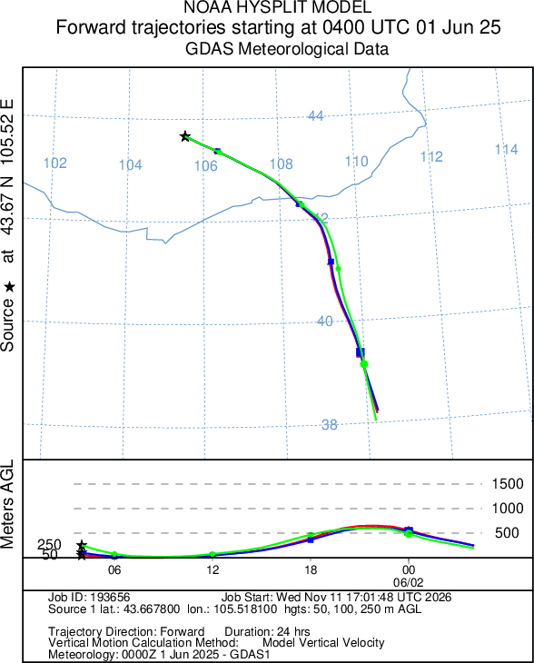

Ухаа худаг · Уурхайн тоосжилт
Өмнөговь аймаг, Цогтцэций сум · 2023–2025 оны зургадугаар сар
Уурхай ба ойр орчмын зураг
Салхины хоёр талын AOD
Дээд тал Доод тал
36 хос өдөрт доод талын дундаж AOD 0.0103-аар өндөр байв. 36 өдрийн 23-т зөрүү эерэг гарсан. Гурав хоногийн блокоор дахин түүвэрлэхэд 95%-ийн интервал −0.0044-өөс +0.0235 гарч, тэгийг багтаав.
| Он | Лицензийн талбай | Өдөр | Доод | Дээд | Зөрүү | Хос өдөр |
|---|---|---|---|---|---|---|
| 2023 | 0.147 | 15 | 0.118 | 0.120 | −0.002 | 14 |
| 2024 | 0.154 | 10 | 0.131 | 0.111 | +0.020 | 7 |
| 2025 | 0.169 | 15 | 0.173 | 0.157 | +0.017 | 15 |
Талбайн дундажид ≥8 хүчинтэй пикселтэй өдөр орсон. Хос харьцуулалтад хоёр сектор тус бүр ≥8 пикселтэй, салхи тогтвортой байх нэмэлт шалгуур тавьсан. Өдрүүдийг ижил жинтэй дундажлав.
Бүс нутгийн эрдэс тоос ихтэй өдөр зөрүү ямар байв?
90 өдрийн MERRA-2 эрдэс тоосны оптик зузаанаар доод болон дээд дөрөвний нэгийг сонгов. Бүс нутгийн тоос багатай бүлэгт салхины хоёр талын дундаж зөрүү +0.0088 (13 хос өдөр), ихтэй бүлэгт −0.0140 (7 хос өдөр) байлаа. Салхины хурд ≥3 м/с ба тал бүрд ≥12 пиксел шаардахад 30 хос өдрийн зөрүү +0.0122 гарсан.
Сонгогдсон 36 өдрийн бүс нутгийн тоосны дундаж AOT 0.067, хасагдсан 54 өдрийнх 0.101 байв. Иймээс үр дүнг шуурга ихтэй өдрүүд болон жилийн бусад сард шууд хэрэглэхэд түүврийн ялгаа нөлөөлнө. Нүүрсний эзлэх хувь, газрын түвшний PM₁₀ болон уурхайн дан ялгарлыг тогтооход орон нутгийн хэмжилт, үйл ажиллагааны бүртгэл хэрэгтэй.
25 жилийн зургадугаар сар · Уурхайн идэвхтэй харьцуулалт
Дээрх аргыг цэг, хил, QA шүүлт, салхины цаг, сектор болон шүүлтүүрийг өөрчлөхгүйгээр 2001–2025 оны 25 зургадугаар сарын 750 өдөрт хэрэглэв. Python-д хөрвүүлсэн GEE код 2023–2025 оны 90 мөрийг daily.csv-тэй яг ижил гаргасан. Ухаа худагт олборлолт 2009 оны 4 сард эхэлсэн тул 2003–2008 оныг өмнөх суурь болгосон. Ашиглалтын жилүүдийг MMC-ийн II улирлын (4–6 сар) нүүрсний олборлолтоор бага (≤1.05 сая т) ба их (≥2.45 сая т) идэвхтэй гэж хуваав.
Олборлолтоос өмнө Ашиглалт, улирлын тоо олдоогүй Бага идэвх Их идэвх
Салхины доод − дээд талын AOD-ийн зөрүү, жилийн дундаж
Лицензийн талбай − 3–8 км орчны AOD, жилийн дундаж
Салхины хоёр талын зөрүү уурхайн идэвхийг дагаагүй. Их идэвхтэй жилүүдийн 70 өдрийн дундаж +0.0080, бага идэвхтэй жилүүдийн 42 өдрийнх +0.0128 байв. Тэдгээрийн зөрүү −0.0049 (95%: −0.0178…+0.0083). Арван жилийн бүлгийн шошгыг 210 бүх хувилбараар сэлгэхэд p = 0.46 гарсан. Олборлолт эхлэхээс өмнөх 2003–2008 онд ч 62 өдрийн зөрүү +0.0064 байсан. Иймээс 2023–2025 оны +0.0103 нь Ухаа худгийн нэмэлт нөлөө гэдгийг энэ тооцоо харуулахгүй.
Лицензийн талбайн AOD орчноосоо илүү болсон ч олборлолтын хэмжээг дагаагүй. MV-011952-ийн хил доторх AOD-оос 3–8 км цагирагийн дундажийг хасав. Цагирагаас лицензийн талбай болон хоёр карьерыг хассан. Зөрүү 2003–2008 онд +0.0057 (71 өдөр), 2009–2025 онд +0.0145 (216 өдөр) байв. Нэмэгдэл нь +0.0088 (95%: +0.0040…+0.0133), 2011 оноос хойш +0.0123. Нэмэгдэл салхи ≥5.1 м/с өдөр +0.0122, түүнээс сул салхитай өдөр +0.0060 гарсан. Гэвч их ба бага идэвхтэй жилийн ялгаа −0.0059 (−0.0144…+0.0029) байв. Жилийн шошгыг санамсаргүй сэлгэхэд нэг талт p = 0.058 гарсан.
Ил нүүрс, овоолго, замаас салхиар хийсэх тоос олборлолт багассан үед ч үргэлжилж болно. Тиймээс тоосны эх үүсвэр олборлосон тонноос илүү ил гадаргын талбайтай холбоотой байж болох юм. Нөгөө талаас, бараан нүүрс ба цайвар овоолгын гадарга MAIAC-ийн AOD сэргээлтэд нөлөөлж болно. Эдгээр хоёр тайлбарыг газрын PM₁₀ хэмжилтгүйгээр салгах боломжгүй.
3–8 км цагирагт өөр нүүрсний карьер байна. Цэгээс баруун өмнө 4–8 км-т OSM-д 14 км² нүүрсний карьер тэмдэглэгдсэн бөгөөд энэ нь «Тавантолгой» талбайд багтана. Энэ карьер доод талын секторт орсон 76 өдөр зөрүү +0.0259, дээд талын секторт орсон 69 өдөр −0.0173 байв. Хоёр секторын алинд нь ч ороогүй өдрүүдэд их − бага зөрүү −0.0249 (−0.0434…−0.0083) болж, тэмдэг нь эсрэгээр эргэсэн. Тиймээс салхины хоёр талын харьцуулалт Ухаа худаг болон хөрш карьерын нөлөөг хольж хэмждэг.
| Бүлэг | Жил | Хос өдөр | Доод − дээд | 95% | Өдөр | Лиценз − орчин | 95% |
|---|---|---|---|---|---|---|---|
| Олборлолтоос өмнө | 2003–2008 | 62 | +0.0064 | −0.0015…+0.0138 | 71 | +0.0057 | +0.0022…+0.0096 |
| Бага идэвх | 2016, 2020–2022 | 42 | +0.0128 | +0.0036…+0.0218 | 50 | +0.0219 | +0.0148…+0.0293 |
| Их идэвх | 2017–2019, 2023–2025 | 70 | +0.0080 | −0.0015…+0.0172 | 81 | +0.0161 | +0.0116…+0.0208 |
| Бүх ашиглалтын жил | 2009–2025 | 183 | +0.0090 | +0.0040…+0.0139 | 216 | +0.0145 | +0.0118…+0.0173 |
| Их − бага | −0.0049 | −0.0178…+0.0083 | −0.0059 | −0.0144…+0.0029 | |||
| Их − өмнө | +0.0016 | −0.0105…+0.0136 | +0.0103 | +0.0044…+0.0162 | |||
| Ашиглалт − өмнө | +0.0026 | −0.0063…+0.0119 | +0.0088 | +0.0040…+0.0133 |
| Шалгалт | Их − бага, доод − дээд |
|---|---|
| Жил бүрийн пикселийн дундаж хэв маягийг хассан | −0.0028 (−0.0119…+0.0063) |
| Салхи, хөрсний чийг, MERRA-2 тоосыг регрессэд оруулсан (112 өдөр) | −0.0032 (−0.0166…+0.0108) |
| Салхи ≥3 м/с, тал бүрд ≥12 пиксел | −0.0049 (−0.0191…+0.0093) |
| Бүс нутгийн тоос медианаас бага өдөр | −0.0048 (−0.0226…+0.0126) |
| Бүс нутгийн тоос медианаас их өдөр | −0.0055 (−0.0245…+0.0123) |
| II улирлын олборлолттой 10 жилийн хамаарал | r = −0.07, p = 0.84 |
| Секторыг 22.5°-аар 16 байрлалд эргүүлэхэд бодит чиглэлийн байр | Их идэвхийн дундаж 16-аас 6-р байр, хэв маягийг хассан үед 8-р байр |
II улирлын «ROM coal mined», мянган тонн: 2016 — 484.0, 2017 — 2 557.6, 2018 — 2 454.5, 2019 — 2 570.6, 2020 — 614.4, 2021 — 1 050.5, 2022 — 601.6, 2023 — 4 128.4, 2024 — 4 791.9, 2025 — 3 428.4. Энэ нь Ухаа худаг ба Баруун наран уурхайн нийлбэр бөгөөд зургадугаар сарын тусдаа дүн биш. Утга бүрийг дараа оны мэдээний харьцуулсан баганаар давхар шалгав. MMC-ийн мэдээ: 2016, 2017 · 2018, 2019 · 2020 · 2021 · 2022 · 2023 · 2024 · 2025
Уурхайгаас хөдөлсөн агаарын замнал
2025 оны 6 сарын 1-ний 12:00 цагт (04:00 UTC) Ухаа худаг дээрээс эхэлсэн агаарын хөдөлгөөнийг NOAA READY HYSPLIT-ээр 24 цаг урагш загварчлав. Эхлэх өндөр 50, 100, 250 м. Маргааш нь төгсгөлийн цэгүүд эхлэлээс зүүн өмнө зүгт тус тус 727, 724, 739 км зайд байв.
Тэр өдөр ERA5-Land-ын 10 м-ийн салхи 124.8° буюу зүүн өмнө зүг рүү чиглэж, дундаж векторын хурд 8.85 м/с байв. Ойр орчмын AOD-ийн зөрүү +0.0101 байлаа. GDAS 1° тороор гаргасан замнал агаар хаашаа очиж болохыг харуулна. Нүүрсэн тоос энэ зайд хүрсэн эсэх, хаана тунасныг хэмжээгүй.
NOAA Air Resources Laboratory · READY / HYSPLIT · тооцоо 193656. Stein нар, 2015

Тооцоог давтах
Салхины сектор, спектрийн индексийн томьёо, чанарын шүүлт болон уурхайн хилийн эх сурвалжийг арга зүйд тайлбарлав. GeoTIFF файлууд WGS 84 / UTM 48N тороор гарсан. Сарын AOD файл бүрд дундаж болон пиксел тус бүрийн хүчинтэй өдрийн тоо бий.